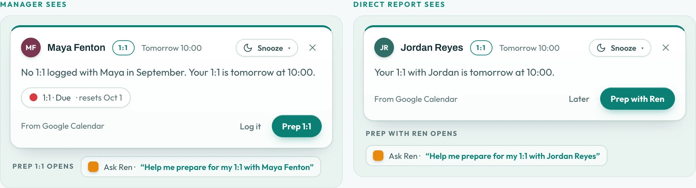
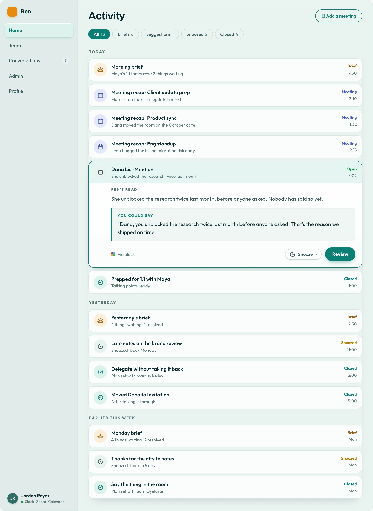

I’m the only product manager at Ren, an AI tool that helps managers have the conversations they keep putting off. I interviewed our biggest customers, redesigned the desktop and mobile app around what they said, and designed every screen myself.
- Role
- Sole PM and designer
- Timeline
- Redesigned in 4 weeks
- Scope
- 50+ screens, desktop and mobile
- Launch
- Opt-in, with a one-click way back
Ren is built on the Accountability Dial, a five-step method more than 100,000 managers have learned. You start with the lightest step and only go further if you need to.
Mention
Name it once, lightly.
Invitation
Ask them to talk about it.
Conversation
Work it through.
Boundary
Say what has to change.
Limit
Say what happens if not.
I shipped into the live app first
When I joined, the Dial, the method the whole product is built on, wasn’t anywhere you could use it. Before redesigning anything, I added it to the live app and watched how customers used it.


Customers kept saying the same three things
With the Dial live, I interviewed three enterprise customers, including our largest.
“I can’t tell what Ren can do.”
Hidden features
Everything sat in boxes under banners.
“I can’t explain it to my team.”
No way to explain it
The buyer had to walk everyone through it.
“I want Ren to do things for me.”
Higher expectations
Other AI tools do the work before you ask.
Because Ren deals with how people are doing at work, trust was the thing most likely to break. Every screen had to follow four rules: Ren suggests and a person decides; every card shows where it came from; nothing disappears without a record; and anything personal is private by default.
One stack of things that need you
The old home page was banners and three separate boxes. I rebuilt it as one stack of cards, so the page always asks for one decision at a time, with the morning brief on top.


A recap after every meeting
When a Zoom call ends, a recap lands in the stack with suggestions already drafted. For meetings Ren missed, one simple form lets you add notes, a transcript or a quick voice recap.

1:1 and plan cards, for both people
When a 1:1 or a quarterly plan is due, a card appears for the manager and a matching one for the person they manage.

Activity
Everything Ren has brought you, in one place. Rows open in place, so you never lose your spot.

The first day
On day one there’s no data yet, so Ren talks first, and what it says depends on what you’ve connected. Pick a setup and try it:
A home for the people you manage
The old Dashboard showed numbers but not who needed you. Team gives each person a tile with the next step on it. Every screen follows one privacy rule: plans and 1:1s are only between a manager and their direct report. Pick a relationship to see it:


1:1 prep, from both sides
Prep starts as a short conversation with Ren, which then builds the plan for the meeting. Both people prep privately, and neither sees the other’s.

A method about progress can’t live in a list
My first version of the Dial was a list, and customers couldn’t see anything move. So I redesigned it as a board with one column per step, where Ren suggests moves and the manager decides. Try it:
Our largest customer needed the opposite of shared: because of HR concerns, they needed Ren to be private to each manager. I built that as the same board with a different sharing rule, so everything we build reaches both.
Ren for the walk between meetings
Suggestion cards come first and you swipe them. Voice mode lets you talk to Ren when reading isn’t practical.


From a tab you open to an assistant that comes to you
Ren could do a lot, but only if you remembered to open it. I planned October to January around one manager’s Tuesday, so Ren reaches you in Slack and on your phone, knows your 1:1s, and acts only within rules you set. Pick a moment and a date:
Customers chose it
of existing users opted in to the redesign
of Ren’s suggestions are accepted
The hardest open question is how Ren can help a manager keep track of someone’s growth without it turning into surveillance. My cybersecurity background makes me careful here, and it’s why privacy is built into every screen.